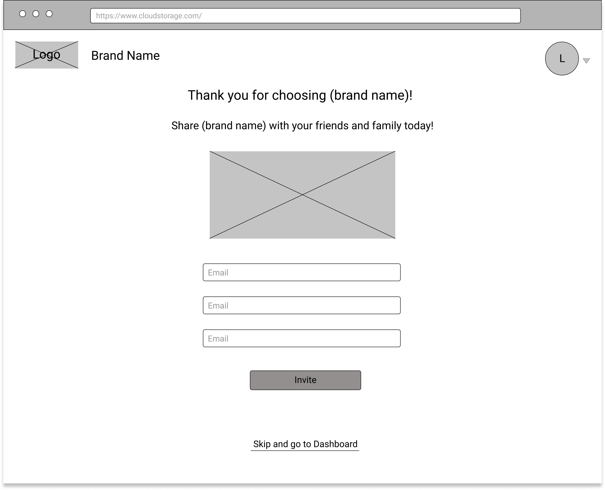
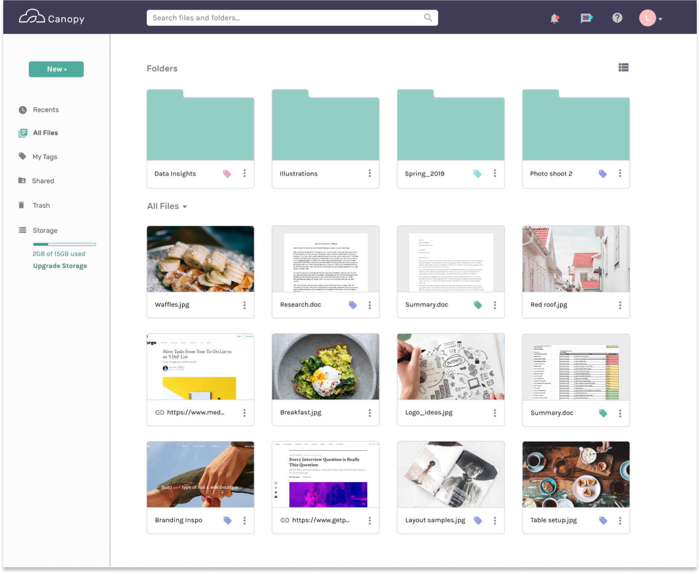
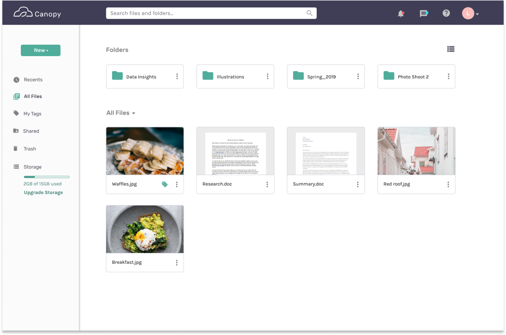
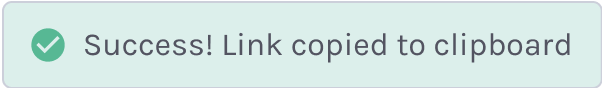
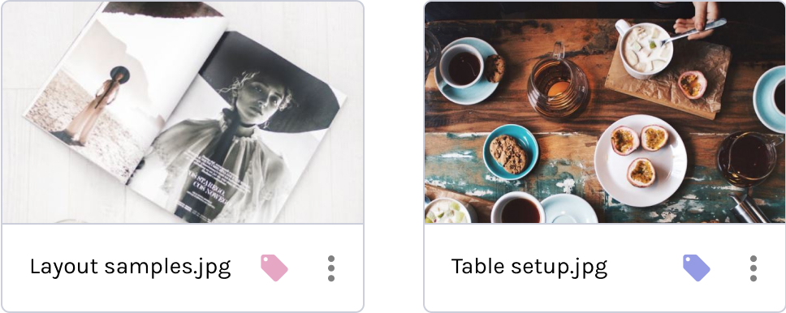
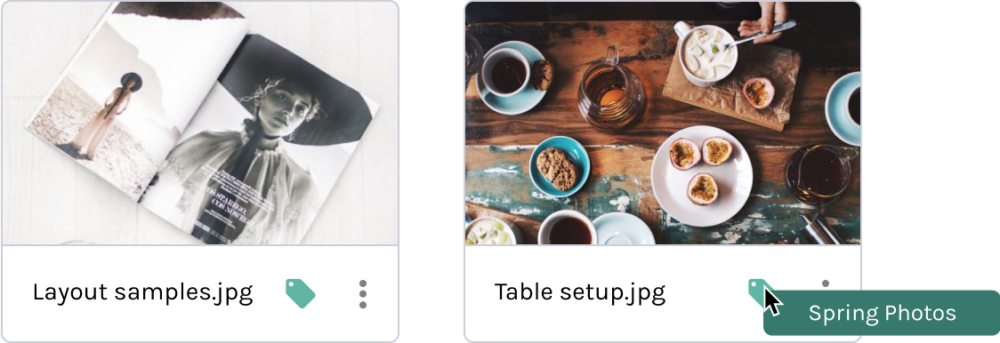

BusyBus
BusyBus is a public transit application that helps bus riders determine what time their bus is arriving to plan trips efficiently.
Design Roles
- UX Design
- Visual Design
- Branding & Identity
Deliverables
- User Surveys
- Personas
- Competitive Analysis
- Concept & Brand Identity
- User Stories
- User Flows
- Wireframes
- User Testing
Specifications
- Tools & Software
- Figma
- UsabilityHub
- Duration: 2 weeks
Problem: Addition of New Bus Routes Cause Rider Confusion
Due to the addition of new bus routes, there are different buses stopping at the same bus stop. Bus riders need to know if the approaching bus is the bus they need to get on, or what time their desired bus is arriving at.
Solution: Bus Arrival Times Helps Riders Plan Efficient Trips
Design an app for bus riders to see what time their bus is arriving at the current bus stop. The app should show:
1) Bus number and terminal name
2) Show bus arrival time in minutes
3) Ability to see when the following bus is arriving
What Public Transit Apps Are Out There?
Competitive Analysis
In order to better understand the competition and the client's required features for this product, I did a competitive analysis of two public transit apps Moovit and Google Maps
Moovit
Suggests the bus route to get to the desired destination
Does not show what direction the bus is bound for.
The mintues next to the bus number may be misleading since it shows the minutes it takes to get to the destination, and not in how many minutes the bus will arrive
Google Maps
Recommends a bus route to get to the desired destination
Does not fully show the whole bus route name/direction
The minutes next to the bus number may be misleading since it shows the minutes it takes to get to the destination, and not in how many minutes the bus will arrive
These platforms are well established within the public transit app space. They have a great set of features that keep users satisfied. However, improvements can be made in regards to the display of bus information. This allows a newcomer to enter the market. As a newcomer, BusyBus can provide clear bus information to the rider and help them better plan and schedule trips that require public transit.
User Survey
To better understand the features that would a part of BusyBus, I conducted a user survey to find out what information is the most important to bus riders.
The majority of public transit app users believe improvements could be made on the current app they are using.
The survey results indicate a majority of users value features such as seeing real time updates in regards to alerts on bus routes, as well as seeing when the following bus is arriving.
Top 2 Features To Include in BusyBus First Iteration
Alerts for bus routes

Arrival time of current bus and next bus

Additional features that users would also like to see in an improved public transit app include being able to see how long it would take to get to the bus stop from their current location. This can help users better plan their trips. These additional features will be factored into later iterations of this app.
The user survey has helped identify the first set of features for BusyBus. BusyBus will help users identify different buses and arrival times due to the bus route expansion in the city.
Identifying the Users
02 Strategy
Based on the user research results, two personas were created to help further identify the direction of this new public transit app.
Aleena, 32 years old - Sr. Software Engineer

"There are so many buses that stop at my stop, it would be great to know when the bus I want to get on is arriving. Also if there were any delays, I would like to know in advance."
Goals
- Being able to see what time the desired bus is arriving at, as well as what time the next bus is arriving
- Being able to see any sudden changes in the bus schedule
Frustrations
- Delayed buses causes delay in getting to work
- Not knowing about bus delays in advance in order to find alternative modes of transportation
- Changes in bus routes might mean getting on the wrong bus
Kevin, 22 years old - Business Student

"I take the bus to get to my part-time job. I need to know the intervals of my bus in case I miss the first one so I can give my co-workers a heads up I might be running a few minutes behind."
Goals
- Being able to see what time the desired bus is arriving at, as well as what time the next bus is arriving.
- Being able to see sudden changes in the bus schedule
Frustrations
- Delayed buses causes delay in getting to work
- Desired bus that is arriving is labeled "Out of Service", therefore rider has to wait for another bus
- Not knowing if multiple buses run through the desired destination.
- Hard to keep track of changes for a file
User Stories
Before the design started it was important to create user stories and highlight the important tasks to create a prodcut that would be viable. A list of user stories were created with the high priorty tasks being the main focus for the first iteration.
High Priority Tasks For A BusyBus New User
- As a new user, I want to see all bus routes at a specific bus stop.
- As a new user, I want to find out what time my bus will be arriving.
- As a new user, I want to be notified of any alerts/delays on my bus route.
- As a new user, I want to see a map of the bus routes.
Prototyping for BusyBus
03 Information Architecture
Before the actual designing started, it was important to create a paper prototype of the app with features that would allow users to complete the high priority tasks. The results from this user test will be used to help build out the actual app.

Usability Test
The task for this usability test with the paper prototype was for the user to find out when the N4 bus was arriving at the Washington & State stop. The 3 users were able to do so by clicking on the Washington & State stop under "nearby stops," and were able to navigate to the next screen showing all 7 bus lines.
Key Findings From Usability Test
Users wanted to know what was the purpose of the "sort by" field next to near by stops. They wanted to know what was being sorted. Ideally in a second round of testing, this feature would be tested to see if it adds any value for the user.

Wireframes(Low Fidelity)
Following the sketches, I created wireframes that would be a foundation from where the design will grow. Here are some of the wireframes shown below.


From these wireframes I developed a low fidelity prototype which will be used for usability testing round one.
User Testing Round 1
From these wireframes I developed a low fidelity prototype which was used for the first round of usability testing. It is important to perform usability tests early on in order to identify any issues that users may face.
Users tests were conducted in person and also through remote testing.Users were asked to complete the following tasks:
1) Sign up for a basic account
2) Upload file(s)
3) Add a tag to a file to organize it
Based on the user testing results, the following changes were made.
Change made: Removed "Share with Friends and Family" screen.
Users were confused by the share with friends a family screen and its purpose. It posted as a barrier to entry so it was removed. New users now go straight to the dashboard after sign up.
Before
After

Change made: Combined "Upload a File" and "Upload a Folder" option from the drop-down menu.
Users were confused by what was the difference between these two selections when instruucted to upload an “item.” Upload a file and upload a folder essentially opens the same window from the computer. Therefore, these two selections were combined to declutter the dropdown and lessen any confusion.
Before

After

Users were able to complete the mentioned tasks in the user test in a fairly straightforward manner. Issues that arose during the testing were addressed in the changes. This can help guide the design in the right direction.
04 Branding & Identity
Brand Story and Name
The name “Canopy” is inpsired by the rainforest canopy. Within the rainforest canopy, there are various forms of life. It is vibrant, green, full of leaves and continuously growing. Similarly that is the story for this cloud storage app. The “leaves” in the canopy represent the files, documents, images, and links that are stored in the cloud. Within the rainforest canopy there are many things going on, such as animals and plants coming together to create a whole ecosystem. Similarly on this cloud storage application, people will share documents and files and come together to collaborate on projects.
Canopy Principles

Secure

Reliable

Intuitive
Color Palette & Typograhy
The color palette chosen is defined to communicate trust, reliability, and a seamless workflow. Colors chosen are accessible, calm, and natural to reflect the Canopy name and feel.
Primary Brand Colors for Canopy
Tradewind
HEX # 4EAD9B
RGB 78/ 173/ 155

Cape Cod
HEX # 353636
RGB 53/ 54/ 54
Blue Zodiac
HEX # 3F3D56
RGB 63/ 61/ 86

White
HEX # FFFFFF
RGB 255/ 255/ 255
For the typography, I chose Rubik to pair with the logo, and Karla as the complimentary. Both of these are sans-serif typefaces that have curves in the letterforms that pair well together. They give the brand a simple and modern aesthetic.
Large heading. Rubik Medium set to 32/44.
Body text Karla Regular set to 16/24. The purpose of this text is to allow you to see how the sizing and spacing appears on the page following the size and spacing guidelines established.
Logo Development
The color palette chosen is defined to communicate trust, reliability, and a seamless workflow. Colors chosen are accessible, calm, and natural to reflect the Canopy name and feel.
Final Logo
05 Visual Design
High Fidelity Mock Ups
With wireframes in place and a defined brand identity, I went on to develop the high fidelity mockups of Canopy along with a clickable prototype for round two of user testing. This is the first iteration of the Canopy dashboard for the high fidelity mock up. I didn’t like how the folders at the top didn’t fit in well with the rest of the dashboard. Upon discussing it with my mentor, I decided it was best to change it to the second version. Overall, I think displaying the folders as simple smaller cards decluttered the dashboard to provide a more organized look, which is ideal.
Before
The big green folders were turned into smaller cards to declutter the dashboard.
After
Preference Testing
To finalize my high fidelity mock ups so they will be ready for round two user testing, I ran some preference tests on certain elements. The feedback I received was very helpful to complete the visual design portion. Here are the results:
70% of respondents chose the down arrow as it is more clear in showing a dropdown menu will occur once clicked on.
Before
After

89% of respondents said the link icon is more discernable when depicted next to the URL.
Before

After

67% of respondents chose “success state 2” over “success state 1” The bright green state is more apparent in showing a task was successfully completed.
Before
After

With preference testing completed, I made the final changes to the high fidelity mock ups and finalized the clickable prototype for round two of user testing.
Usability Testing Round 2
For round 2 user testing, users were tested in person or via Zoom with the test script on the following tasks:
1) Sign up for a basic account
2) Upload file(s)
3) Add a tag to a file to organize it
Changes: Users were confused by the different color tags. Therefore, tags were changed to one color for consistency to lessen confusion. If the user hovers over a tag, they can see the tag’s name.
Before (multi-color tags)
After (single color tags with hover)
Overall, users were able to accomplish the tasks defined. With the final changes made, the clickable prototype was finalized. Below is the design progression along with the final product.
06 Conclusion
Design Progression


Moving Forward
Two key learnings I can take away from this project is:
1) creating a better user survey and research process
2) being smarter about designing if Figma and learning how to use components.
I realized my user survey and the questions I was asking could have been stronger and less vague. As for working in Figma, I neglected to use components which I now realize would have been such a time saver. I also hope for my next project I can conduct a more indepth user testing that would allow me to test for more flows rather than just the few I tested for in this project. I really enjoyed working on this project and I am definitely looking forward to the next.
Thank you for stopping by!